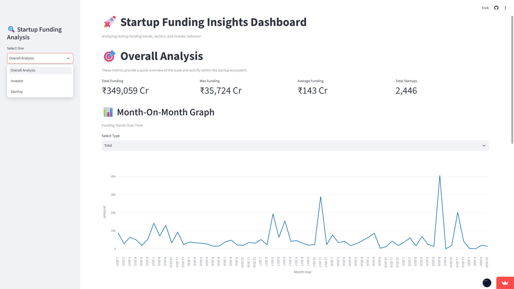
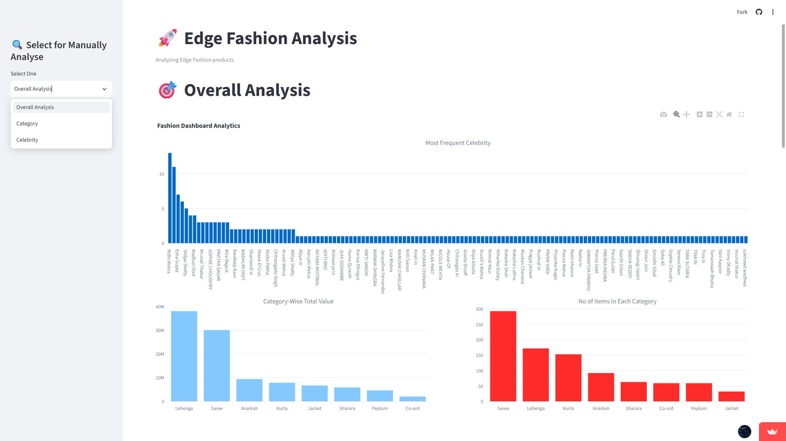
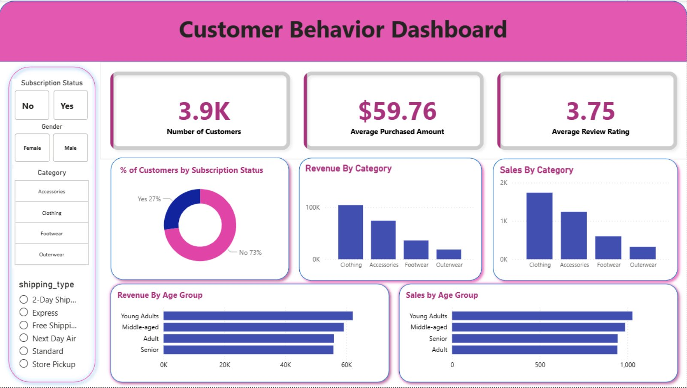

DATA ANALYST | AI & ML ENTHUSIAST
Turning Data Into Insights,
Building Intelligence Through AI.
Hi, I'm Md Rizwan Alam
I'm a Computer Science graduate passionate about Data Analytics, Artificial Intelligence, and Machine Learning. I enjoy transforming raw data into meaningful insights and building practical, data-driven solutions.
Curious by nature. Analytical by approach. Always learning.
GET TO KNOW ME
About Me
A little about my background, interests, and approach to problem-solving.
Turning questions into insights.
I am a Computer Science graduate from the University of Delhi, currently pursuing an MSc in Artificial Intelligence & Machine Learning. My interests bring together data analytics, visualization, and machine learning.
Through hands-on projects, I have worked with real-world datasets, performed data cleaning and exploratory data analysis, and developed interactive dashboards to communicate findings clearly.
I also work as an AI Content Moderator / Annotator at Innodata, where I review and annotate visual content to support AI/ML model training and evaluation.
01
Data Analytics
Exploring data, identifying patterns, and communicating findings.
02
Visualization
Building clear, interactive dashboards and visual stories.
03
AI & Machine Learning
Learning and applying intelligent, data-driven techniques.
WHAT I WORK WITH
Technical Skills
Tools and concepts I use across analysis, visualization, and machine learning.
Data Analysis
Visualization & BI
Machine Learning
Tools & Development
Web Scraping
SELECTED WORK
Featured Projects
A selection of practical projects across data analytics, business intelligence, and machine learning.

DATA ANALYTICS · DASHBOARD
Startup Funding Analysis Dashboard
Built an interactive dashboard to explore Indian startup funding, investment trends, sectors, investors, and leading startup hubs.

DATA ANALYTICS · DASHBOARD
Edge Fashion Analysis
Created an interactive fashion analytics dashboard to explore 8+ product categories through data cleaning, EDA, filters, and visualizations.

BUSINESS INTELLIGENCE · POWER BI
E-commerce Customer Behavior Analysis
Built a Power BI dashboard to explore customer behavior, subscription patterns, purchase amounts, product categories, sales, and revenue using interactive filters and visualizations.
FILMFINDRECOMMEND
MACHINE LEARNING · RECOMMENDATION
Movie Recommendation System
A movie recommendation project using content similarity to identify and suggest films with related characteristics.
GitHub link to be added
SMARTPHONE
DATA
DATA
COMPARE · EXPLORE · ANALYZE
WEB SCRAPING · DATA ANALYSIS
Smartphone Data Analysis
Collected smartphone data through web scraping, analyzed product information, and prepared the dataset for sharing on Kaggle.
GitHub / Kaggle link to be added
Explore the live dashboards and source code to learn more about each project.
MY JOURNEY
Experience & Practice
Professional experience and practical work developed through independent projects.
JUL 2026 — PRESENT
AI Content Moderator / Annotator
Innodata
- Evaluate chart- and image-based data to support AI/ML model training and evaluation.
- Annotate and classify visual content using predefined data quality, relevance, and accuracy criteria.
- Review charts, graphs, and tabular visuals to identify inconsistencies and provide structured feedback.
JAN 2026 — PRESENT
Data Analyst — Self-Initiated Projects
Independent Projects
- Perform end-to-end analysis using Python, SQL, and Excel.
- Clean, transform, and analyze datasets, including datasets with 10,000+ records.
- Build interactive dashboards using Power BI and Streamlit.
- Conduct exploratory data analysis to identify trends and insights.
ACADEMIC BACKGROUND
My Education
My academic foundation in computer science and artificial intelligence.
POSTGRADUATE
MSc Artificial Intelligence & Machine Learning
Currently pursuing
2021 — 2024
BSc (Hons.) Computer Science
University of Delhi · Sri Guru Gobind Singh College of Commerce
7.17 CGPA2019 — 2021
Intermediate — Science
Kendriya Vidyalaya Chandrapura · CBSE
95.4%2019
Matriculation
Kendriya Vidyalaya Chandrapura · CBSE
93.8%WANT THE DETAILS?
Take a closer look at my resume.
Download my resume for a concise overview of my skills, experience, education, and projects.
LET'S CONNECT
Have an opportunity or a project in mind?
I'm always interested in connecting with people working in data analytics, AI, and machine learning.
Get in touch ↗